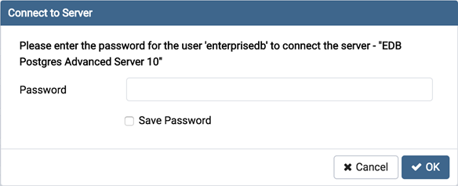
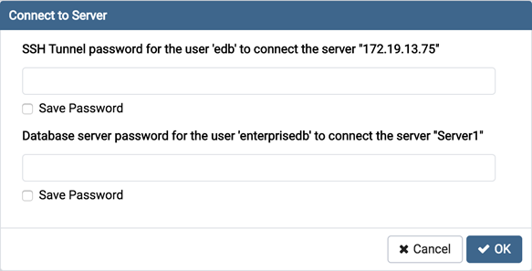

Connect to Server¶
Use the Connect to Server dialog to authenticate with a defined server and access the objects stored on the server through the pgAdmin tree control. To access the dialog, right click on the server name in the pgAdmin tree control, and select Connect Server… from the context menu.
Provide authentication information for the selected server:
Use the Password field to provide the password of the user that is associated with the defined server.
Check the box next to Save Password to instruct the server to save the password for future connections; if you save the password, you will not be prompted when reconnecting to the database server with this server definition.
When using SSH Tunneling, the Connect to Server dialog will prompt for the SSH Tunnel and Database server passwords if not already saved.
Provide authentication information for the selected server:
Use the Password field to provide the password of the user that is associated with the defined server.
Check the box next to respective Save Password to instruct the server to save the password for future connections; if you save the password, you will not be prompted when reconnecting to the database server with this server definition.
The pgAdmin client displays a message in a green status bar in the lower right corner when the server connects successfully.
If you receive an error message while attempting a connection, verify that your network is allowing the pgAdmin host and the host of the database server to communicate. For detailed information about a specific error message, please see the Connection Error help page.
To review or modify connection details, right-click on the name of the server, and select Properties… from the context menu.